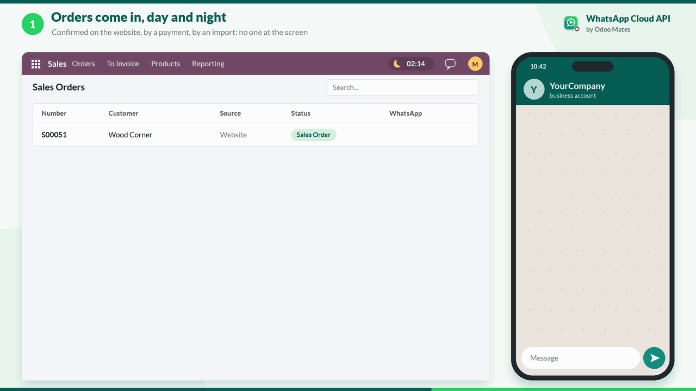
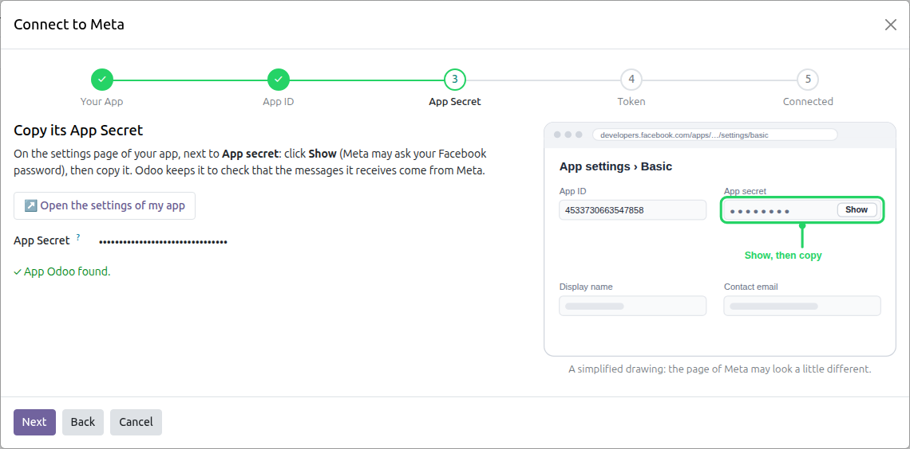
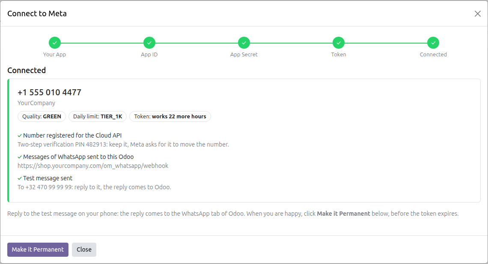
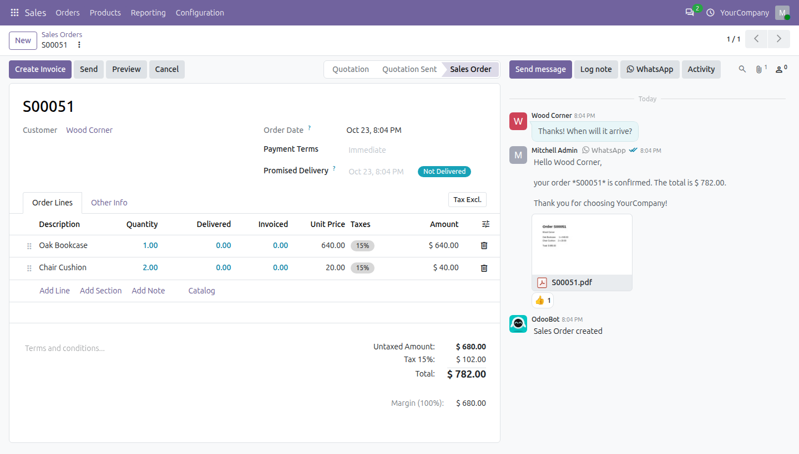
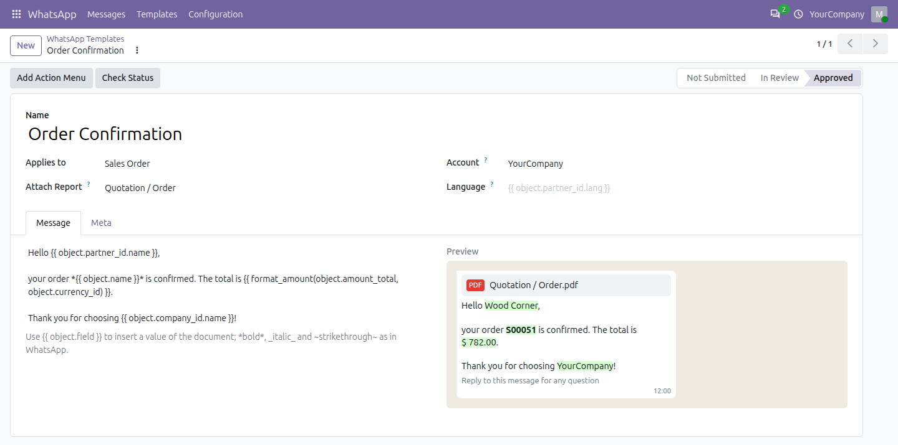
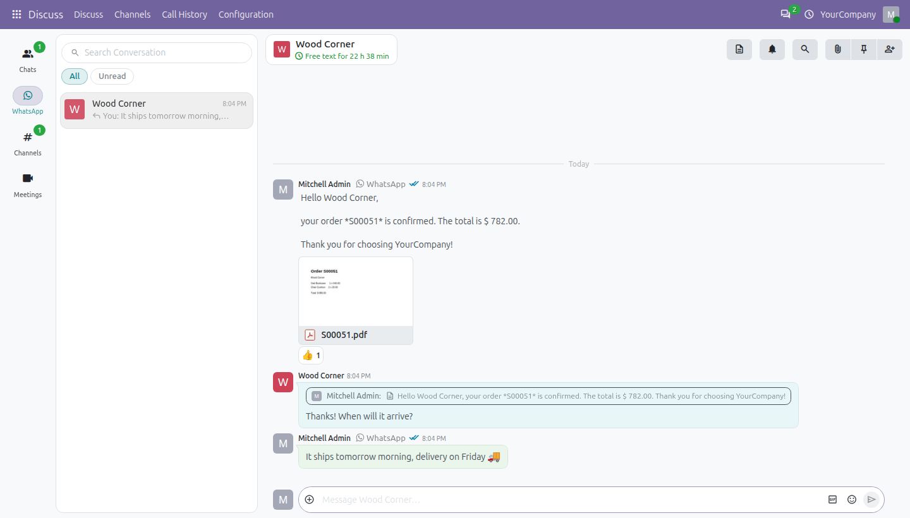

Connect Odoo to the official WhatsApp API of Meta. Order confirmations, invoices and reminders go out from the server, with their PDF, and the replies come back to the conversations of Discuss and the chatter of the documents. Set up in minutes: three values to paste, Odoo does the rest.

A setup assistant guides you through Meta for Developers, one task a page. It checks each value at once, and tells you what to do when something is missing.
A free app of Meta for Developers, in the business portfolio of your company: Meta makes the WhatsApp account with it, and a free test number to try everything.
Its App ID, its App Secret and a token: one task a page, each with a button to the right page of Meta, each value checked at once.
It finds the number, registers it, has Meta send the messages of WhatsApp to your Odoo, and sends you a test message.

One task a page, a drawing of where to click in Meta, each value checked as soon as it is pasted.

Connected: the number as Meta sees it, and what Odoo set up for you.
With an automation rule, a WhatsApp goes when an order is confirmed, an invoice posted, a delivery done: the template filled in with the values of the document, its report as a PDF.

The order confirmation sent from the server, with its PDF: read, a 👍, and the reply of the customer on the order.
Write the template in Odoo with the fields of the document, as for any template. Odoo submits it to Meta and follows its review.

Write the template with the fields of the order; the preview shows it as your customer will see it.
Each customer gets a WhatsApp conversation in Discuss, shared by the users of the account. The reply also goes to the chatter of the order or invoice it answers.

The conversation in Discuss: the order with its PDF, the 👍, the quoted reply, and the time left for free text in the header.
What do I need from Meta?
A Facebook account of your business and a free app of Meta for Developers. To try, the test number of Meta is enough; for your own number and more messages a day, Meta asks for the verification of your business.
What does it cost?
Meta charges the template messages at its own rates, by country and category; answering a customer within 24 hours of their message is free. See the WhatsApp pricing of Meta. Nothing goes through Odoo Mates.
What must my Odoo have?
A public https address, where Meta sends the replies and the ticks: a hosted Odoo has one; a local Odoo needs a tunnel (cloudflared, ngrok). On a server of several databases, a dbfilter that keeps yours: the assistant tells you when it is missing.
And the WhatsApp app on my phone?
A number used with the Cloud API leaves the WhatsApp app of the phone: use a number for the business, or the test number of Meta to try.
What is the difference with WhatsApp Connector Web?
WhatsApp Connector Web sends from the WhatsApp Web of your browser, with your own number, free, one message a click. This module talks to the official API of Meta: from the server, for any number of records, with templates approved by Meta. Both share the same base, conversations and templates.
Can I send to many customers at once?
Yes, with templates approved by Meta: from the Action menu of a list, or an automation rule. Meta sets how many customers a number may start a conversation with each day, and raises it with the quality of your messages.